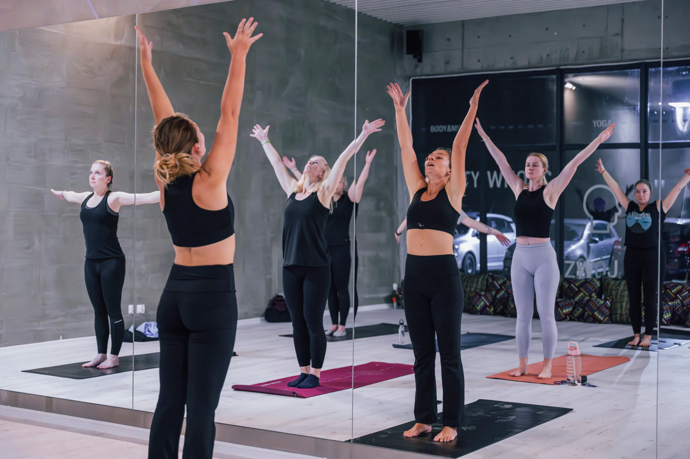
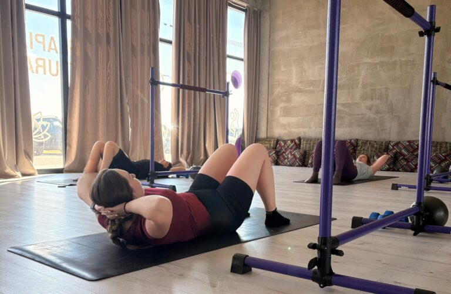
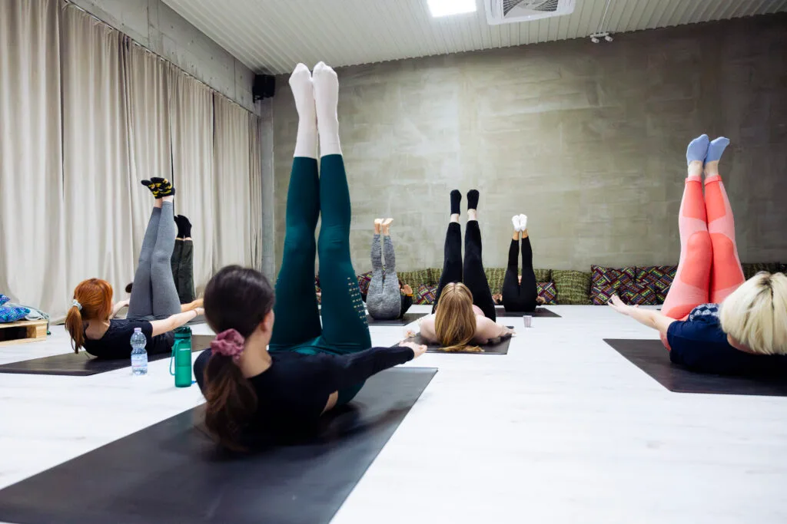
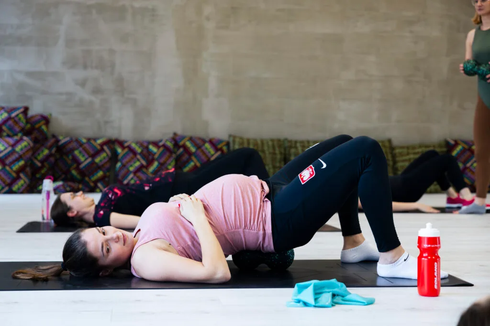

Zajęcia › Zadbaj o ciało
BODYART
Dla osób, które chcą, żeby ciało naprawdę popracowało, a głowa wyszła z zajęć spokojniejsza.
- umiarkowana
- 60 min
- śr 20:00, pt 19:00

O zajęciach
Na czym polegają zajęcia?
Praktyka, która łączy siłę ciała z oddechem i świadomym ruchem. Czerpie z jogi, Tai Chi, Qi Gongu, tańca i ćwiczeń wzmacniających, a ruch prowadzony jest w rytmie pięciu żywiołów.
- Koniec z bólem pleców
- Relaks i redukcja stresu
- Swoboda ruchów i sprawność
- Więcej energii do działania
- Siła i wytrzymałość
- Równowaga emocjonalna
Czy to zajęcia dla Ciebie?
- Masz ograniczone zakresy ruchu i chcesz zwiększyć swoją mobilność?
- Boli Cię kręgosłup i czujesz, że potrzebujesz, by się wzmocnił?
- Chcesz wzmocnić swoje mięśnie głębokie brzucha?
- Pragniesz znaleźć równowagę między pracą a odpoczynkiem?
- Chcesz mieć więcej siły w codziennym życiu?
- Szukasz treningu, który sprawi, że poczujesz się lepiej i bóle w ciele znikną?
- Odczuwasz brak energii i siły do wprowadzenia zmian w swoim życiu?
Korzyści
Co Ci dadzą regularne zajęcia
Zrozumienie swojego ciała i jego potrzeb
Nauczysz się lepiej słuchać swojego ciała, co pomoże uniknąć przeciążeń i szybciej reagować na sygnały zmęczenia czy napięcia.
Zdrowy kręgosłup i otwarta klatka piersiowa
Poprawisz postawę, zmniejszysz napięcia w plecach oraz ułatwisz swobodne oddychanie, co wpłynie na lepsze samopoczucie i więcej energii.
Silne mięśnie brzucha i CORE
Wzmocnisz centrum swojego ciała, co poprawi stabilność, zmniejszy ryzyko urazów i ułatwi wykonywanie codziennych aktywności.
Mobilne biodra i sprawne ciało
Zyskasz większą swobodę ruchów i pewność podczas chodzenia, wstawania czy ćwiczeń, co sprawi, że będziesz się czuć lżej i bardziej energicznie.
Relaks dla głowy
Zredukujesz napięcia i stres, co pomoże Ci się wyciszyć, lepiej spać i zachować spokój nawet w trudnych sytuacjach.
Silne i zrelaksowane ciało
Nauczysz się łączyć siłę z rozluźnieniem, co poprawia komfort ruchu i pozwala unikać przewlekłego napięcia mięśniowego.
Więcej energii do działania
Dzięki lepszemu dotlenieniu i harmonijnemu ruchowi poczujesz przypływ energii, który pozwoli Ci być bardziej aktywnym i zmotywowanym.
Utrata tkanki tłuszczowej
Regularne ćwiczenia pomogą spalić nadmiar tłuszczu, poprawiając sylwetkę i wspierając zdrowie metaboliczne.
Lepsze dotlenienie organizmu
Poprawisz swoją wydolność oddechową, co zwiększy odporność organizmu i ogólne samopoczucie.
Większe i swobodne zakresy ruchów
Zyskasz elastyczność i pełniejszą ruchomość stawów, co ułatwi wykonywanie codziennych czynności i zapobiegnie kontuzjom.
Dlaczego warto
Dlaczego warto wybrać BODYART?
Yin Yang dla ciała
W trakcie całego treningu naprzemiennie wzmacniamy i rozciągamy powięziowo ciało tak, aby zapanowała w nim równowaga, a napięcia się rozluźniły.
Relaks dla głowy
Oddech, który jest kluczowym elementem BODYART, pozwala Twojej głowie się zrelaksować i wyciszyć. W trakcie treningu jest czas pomyśleć, jak się czujemy i czego potrzebujemy, i to zrealizować.
Idea
Jest to najzdrowszy trening, jaki został stworzony. Idzie za nim idea 5 żywiołów, które są różne, lecz wzajemnie się uzupełniają i na siebie oddziałują. Tak więc jest czas na pracę i odpoczynek. Równowaga na macie jak i w życiu.
Terminy
Najbliższe zajęcia
- Dziś 20:00–21:00 Zuzanna Listkiewicz · zastępstwo zapisz się · wolne: 9 →
- Piątek, 2.10 19:00–20:00 Ela Pniaczek zapisz się · wolne: 7 →
- Środa, 7.10 20:00–21:00 Zuzanna Listkiewicz · zastępstwo zapisz się · wolne: 14 →
- Piątek, 9.10 19:00–20:00 Zuzanna Listkiewicz · zastępstwo zapisz się · wolne: 10 →
- Środa, 14.10 20:00–21:00 Daria Gronalewska zapisz się · wolne: 14 →
- Piątek, 16.10 19:00–20:00 Zuzanna Listkiewicz · zastępstwo zapisz się · wolne: 10 →
- Środa, 21.10 20:00–21:00 Daria Gronalewska zapisz się · wolne: 15 →
Jak zacząć?
- Kup wejście – pierwsze wejście 40 zł albo 7 dni bez limitu za 111 zł.
- Zapisz się na termin – kliknij wybrany dzień obok, otworzy się grafik na ten dzień.
- Przyjdź 10 minut wcześniej – w wygodnym stroju, ćwiczymy boso.
Masz pytania? +48 797 976 960
Prowadzący
Kto prowadzi zajęcia


Dla ciekawych
Dowiedz się więcej o BODYART
Filozofia i założenia
Filozofia i założenia BODYARTU opierają się na traktowaniu człowieka jako funkcjonalnej, zintegrowanej całości — ciała i umysłu. Trening nie koncentruje się na izolowanym wzmacnianiu pojedynczych mięśni, lecz angażuje wszystkie partie mięśniowe jednocześnie, poprawiając siłę, elastyczność, koordynację i wytrzymałość. Ruchy wykonywane są płynnie, tworząc dynamiczne, taneczne układy, które harmonizują ciało z oddechem i umysłem. Dzięki temu BODYART sprzyja redukcji stresu, poprawie koncentracji oraz osiąganiu wewnętrznej równowagi.
Trening BODYART wykorzystuje własną masę ciała, nie wymaga sprzętu, a jego ćwiczenia są dostosowane do osób w różnym wieku i na różnym poziomie zaawansowania. Metoda integruje techniki z jogi, tai chi, qigong, tańca, fizjoterapii oraz japońskiej metody DO IN, co pozwala na kompleksowe wzmocnienie i rozciągnięcie mięśni, poprawę postawy oraz eliminację nieprawidłowych nawyków ruchowych.
Jak filozofia holistycznego podejścia wpływa na codzienną równowagę?
Filozofia holistycznego podejścia BODYART wpływa na codzienną równowagę poprzez integrację ciała, umysłu i ducha w jednym treningu. Ćwiczenia BODYART łączą techniki oddechowe z płynnymi, funkcjonalnymi ruchami inspirowanymi jogą, pilatesem i filozofią chińską, w tym zasadą Yin i Yang, co nadaje treningowi charakterystyczny rytm i harmonię. Dzięki temu praktyka nie tylko wzmacnia siłę, gibkość i koordynację, ale również pomaga osiągnąć wewnętrzny spokój oraz lepsze zrozumienie własnego ciała.
Codzienna praktyka BODYART pozwala skupić się na chwili obecnej, redukując stres i poprawiając koncentrację, co przekłada się na większą równowagę emocjonalną i psychiczną. Połączenie spokojnych, relaksujących ćwiczeń z dynamicznymi i rytmicznymi elementami daje energię do działania, a jednocześnie umożliwia regenerację i odprężenie. Holistyczne podejście tej metody sprzyja harmonii między aktywnością fizyczną a regeneracją, co jest kluczowe dla utrzymania zdrowia i dobrego samopoczucia na co dzień.
W praktyce BODYART wpływa więc kompleksowo na codzienną równowagę, wspierając zarówno sprawność fizyczną, jak i stabilność emocjonalną oraz mentalną, co jest fundamentem zdrowego, zrównoważonego stylu życia.
Teoria pięciu przemian w BODYART
Teoria pięciu przemian (wu xing) z Tradycyjnej Medycyny Chińskiej stanowi kluczowy fundament filozoficzny i praktyczny treningu BODYART stworzonego przez Roberta Steinbachera. Pięć przemian — drewno, ogień, ziemia, metal i woda — to dynamiczne, wzajemnie powiązane żywioły, które symbolizują różne funkcje organizmu, emocje, narządy oraz naturalne cykle zachodzące w przyrodzie i człowieku.
W BODYART teoria ta została zaadaptowana jako sposób na harmonijne komponowanie sekwencji ruchowych, które odzwierciedlają naturalne procesy tworzenia i kontroli między żywiołami. Każdy element odpowiada innym aspektom ciała i umysłu:
DRZEWO – symbolizuje wzrost, elastyczność i kreatywność; wiąże się z wątrobą i emocją gniewu.
OGIEŃ – oznacza energię, ekspresję i radość; powiązany jest z sercem i pobudzeniem.
ZIEMIA – odpowiada za stabilność, ugruntowanie i równowagę; związana ze śledzioną i obsesją.
METAL – kojarzy się z precyzją, oczyszczeniem i porządkiem; dotyczy płuc i smutku.
WODA – symbolizuje płynność, regenerację i spokój; związana z nerkami i strachem.
BODYART wykorzystuje cykle przemian, czyli cykl tworzenia (np. woda odżywia drzewo, drzewo pali ogień) oraz cykl kontrolny (np. metal kontroluje drzewo, ziemia kontroluje wodę), aby ruchy i oddech wzajemnie się uzupełniały i harmonizowały. Sekwencje ćwiczeń są tak układane, by równoważyć napięcie i rozluźnienie, siłę i elastyczność, co sprzyja przepływowi energii Qi i utrzymaniu zdrowia na poziomie fizycznym, emocjonalnym i energetycznym.
W praktyce podczas zajęć BODYART uczestnicy uczą się świadomego ruchu i oddechu, które są dostosowane do rytmów pięciu przemian. To pozwala lepiej zrozumieć własne ciało, emocje oraz ich zmienność, a także odzyskać wewnętrzną równowagę i spokój. Dzięki temu trening BODYART nie jest tylko aktywnością fizyczną, lecz kompleksową praktyką wspierającą zdrowie holistyczne i harmonię życia codziennego.
Historia powstania BODYART
Początki koncepcji BODYART sięgają 1993 roku, kiedy Robert Steinbacher pracował z dziećmi ze specjalnymi potrzebami w centrum edukacji leczniczej (HPZ) w pobliżu Salzburga. Jego głównym zadaniem było pomaganie dzieciom w poprawie funkcji motorycznych ciała. To doświadczenie, połączone z jego pasją do tańca i rozwijającą się karierą prezentera, stało się fundamentem dla BODYART.
Steinbacher, czerpiąc z różnorodnych źródeł, stworzył system treningowy, który stanowi odpowiedź na potrzeby współczesnego, zabieganego człowieka, poszukującego ciszy i koncentracji w codziennym życiu. Zauważył, że wiele dotychczasowych form aktywności fizycznej skupia się na izolowanych mięśniach, podczas gdy on dążył do holistycznego podejścia, traktując ludzkie ciało jako funkcjonalną całość.
Kluczowe inspiracje dla BODYART pochodziły z:
- Jogi
Fizjoterapii
Tańca
Klasycznych technik oddechowych
Medycyny chińskiej, w tym teorii Yin i Yang oraz idei pięciu żywiołów
Robert Steinbacher czerpał z medycyny chińskiej przede wszystkim inspiracje związane z filozofią Yin i Yang oraz teorią pięciu żywiołów, które stały się fundamentem koncepcji BODYART. Te zasady pomagają w tworzeniu harmonii i równowagi między przeciwstawnymi, lecz uzupełniającymi się energiami — napięciem i rozluźnieniem, wdechem i wydechem, aktywnością i regeneracją.


Zadbaj o ciało
Zobacz też

Barre PilatesDla osób, które chcą wzmocnić i wymodelować ciało – nie potrzebujesz doświadczenia baletowego ani tanecznego.
Sinya PilatesDla osób, które chcą wzmocnić ciało spokojnie i bezpiecznie – liczy się jakość ruchu, nie tempo. Pilates Zdrowy KręgosłupSzczególnie dla kobiet w ciąży, mam z maluszkami (do ok. 2. roku życia) i osób wracających do ruchu po przerwie.
Trening ProzdrowotnySzczególnie dla kobiet w ciąży, mam z maluszkami (do ok. 2. roku życia) i osób wracających do formy po dłuższej przerwie.Zapisz się na zajęcia
Wybierz zajęcia, które odpowiadają Twoim potrzebom
W planie tygodnia kliknij „zapisz się” przy wybranych zajęciach – grafik e-fitness otworzy się od razu na tym dniu. Pierwszy raz? Zacznij od pierwszego wejścia za 40 zł albo 7 dni bez limitu za 111 zł.